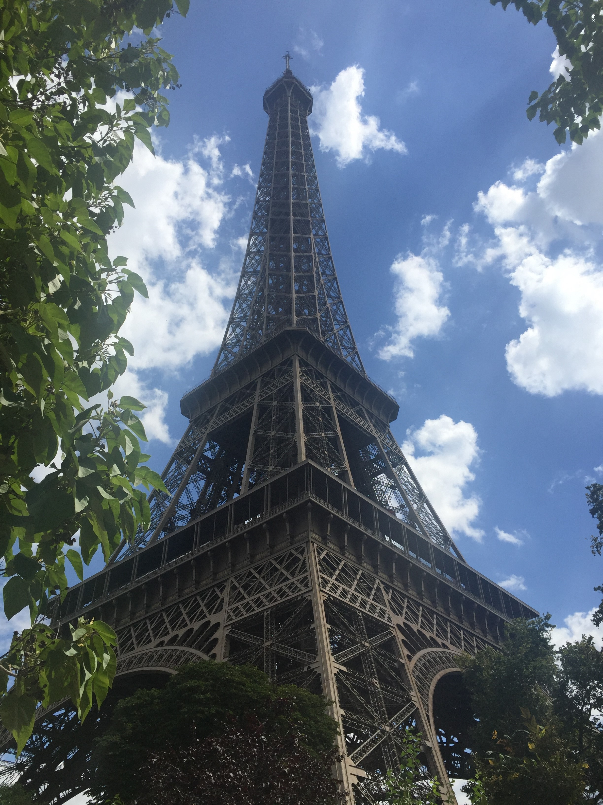
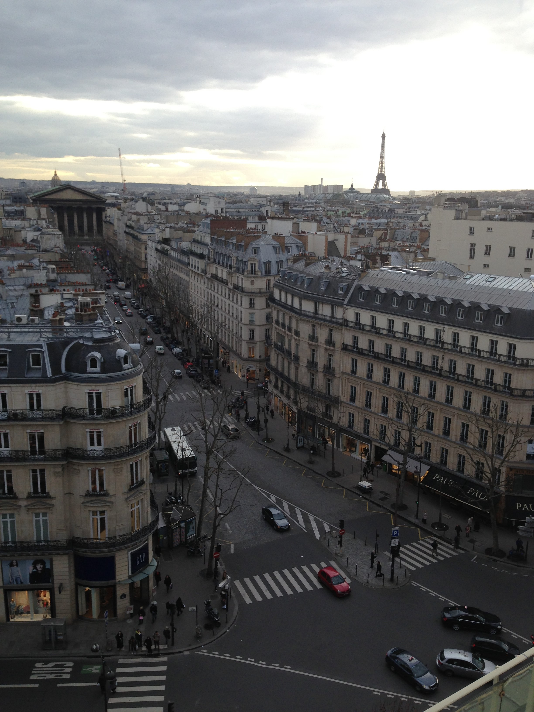
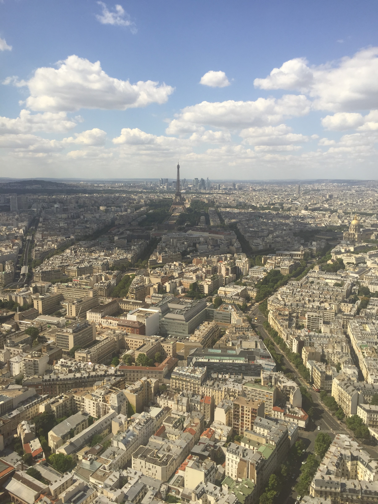

Generally, Paris is considered one of the fanciest cities in the world but what really makes it special is one's own personal experiences, not the glamour. Here are some famous and not-so-famous places to visit.
Everyone thinks of the Eiffel Tower when thinking of Paris, but is it an overrated structure? Mais non! It is even more magnificent than the pictures. There are few greater feelings than exiting the Metro and walking towards it for the first time, watching the Tower get bigger and bigger until, finally, you're right underneath it. After taking pictures around it, have a quick picnic lunch in the surrounding park and then head up. Ticket prices vary by the method of transportation to the top of the tower, and taking the stairs is cheaper than taking the elevator.
Another classic must-see, the Louvre holds hundreds of years of art and history within its walls. The museum is so huge, it would take days to see everything it holds. And the architecture is equally captivating. The magnificent halls and adorned, tall ceilings will make you gasp in awe in every part of the building. Come and see this wonder in person.

Grab a one-euro baguette from one of the boulangeries found on every corner and have a relaxing day in one of Paris's many parks. Each one offers something different and there is something for everyone...even those who don't like parks!
Bois de Vincennes is the largest park in Paris. The weather is mild all year round in Paris, and the summers are especially nice. You can rent a boat onto the huge lake, sunbathe all day, or visit the small fair they have in the summer. Plan to go on a nice day, and you will always remember how relaxed you felt years after visiting. This is the perfect place to go if you need a break from sightseeing.
Buttes-Chaumont is little out of the way but it feels like an escape from the city into a fictional, serene place. The Parisiennes know how to separate nature from city life. This park features a number of medieval-looking towers which make you feel like you have been transported into a fairytale. There are hiking trails, bubbling brooks and bridges that have amazing views. And, it is a place where mostly locals visit, so it's great to people watch and see how the French live.
Parc Montsouris is a little out of the way, so do not visit if you are not already going in that direction. Day and night, it is filled with fit Parisiennes jogging through the park and children playing in the grass. There are also a number of birds that people from other continents may not have seen before. It has a great history; Trotsky, Lenin, and Hemingway are a few famous historical figures who frequented the park.
A truly hidden gem in Paris is Printemps Haussman. It is a giant shopping center with 8 floors, which is rare for the simplicity of Paris. However, most tourists do not visit here for the stores. At the very top of one of the buildings (make sure you know which!) is the Deli-Cieux, a cafe that overlooks the city and, in my personal opinion, has the best view. You don't have to make a purchase in order to enjoy, either. Seating is available but you'll find yourself standing in awe of the beauty before you.
My favourite thing to do in each city I visit is to see the city from its highest vantage point. There is a much greater connection to the city when its entire majesty is viewed from the sky. Not many travellers know about la Tour Montparnasse, the tallest tower in Paris. The tickets to get to the top are cheap for the best view in Paris, and cheaper still if you have a student identification card. In my personal opinion, the view from Montparnasse is better than the view from the Eiffel Tower...because you can get great pictures of the Eiffel Tower from Montparnasse!
 « Toronto London »